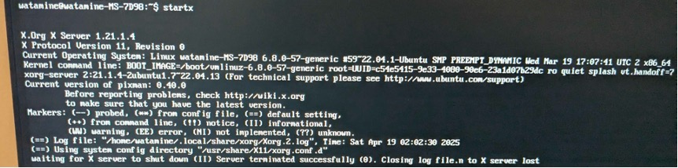

ここまでの流れ
PCを操作していたら固まったので、強制再起動した．
ふだん通りUbuntuでユーザーを選択，パスワードを入力した．
いつもならここでデスクトプ画面が表示されるが，真っ暗のまま何も表示されない．
起動→OS選択→ユーザー選択までは問題なさそうだが，GUI (Graphical User Interface)に関わるどこかで不具合が起きている？
システム再起動、X window system再起動
デスクトップ環境(gdm) に問題があるかを確認した
いずれの手順でも原因はわからなかった。
 https://hrzine.jp/article/detail/37
https://hrzine.jp/article/detail/37
ここからはデスクトップ環境やXサーバーを含む、X window systemについて異常があるか確認する
X window systemの概要は以下の図
 https://www.kenschool.jp/blog/?p=3349
https://www.kenschool.jp/blog/?p=3349
GNOMEシェルの再起動を試す
export DISPLAY=:0 # 環境変数DISPLAYの設定
gnome-shell –replace # 再起動
GUIの起動にはXサーバーとデスクトップ環境との通信が必要になるので接続先を明示する必要がある
(ホスト名):(ディスプレイ番号).(スクリーン番号) のように指定。
リモート接続のときにはホストを指定する必要がるが、今回は指定しなくてもOK
Failed to setup: unable to open display '0'
XサーバーとXクライアント（デスクトップ環境）の通信がうまくいっていないor出力先のディスプレイを認識できていない
出力先ディスプレイは先程DISPLAY変数で設定したので、一旦Xサーバーを再起動して様子を見る
Xサーバーの再起動
startx

(II) Server terminated successfully (0). Closing log file.
Xサーバーの起動は問題なさそう。
ということは、デスクトップ環境との接続に問題がある？
.xinitrcを編集（Xサーバー起動時に実行されるスクリプト）
nanoエディタで起動して以下を書き込む
exec gnome-session
startx実行時にGNOMEセッションを起動するように設定 もう一度Xサーバーを再起動
startx
無事にデスクトップが復活した！
原因は結局よくわからなかったけど、固まってから強制電源オフしたときに.xinitrcが破損した？
またはグラボの挙動が不安定だったのでそれが原因？
結局よくわからずじまいなので、根本的解決にはなっていない気がする...
感想
理解したとは到底言い難いけれど、コンピューターの起動メカニズムの概念に触れることができた。
仮想コンソールで日本語が文字化けするのは困るので22.04にアップデートするタイミングあたりで英語版を入れる
これからは固まっても強制電源オフせず、落ち着いて仮想コンソールに入る
参考記事
https://www.ep.sci.hokudai.ac.jp/~inex/y2017/0630/practical/01_x.html
https://qiita.com/kakkie/items/c6ccce13ce0beaefaad1
chatGPT